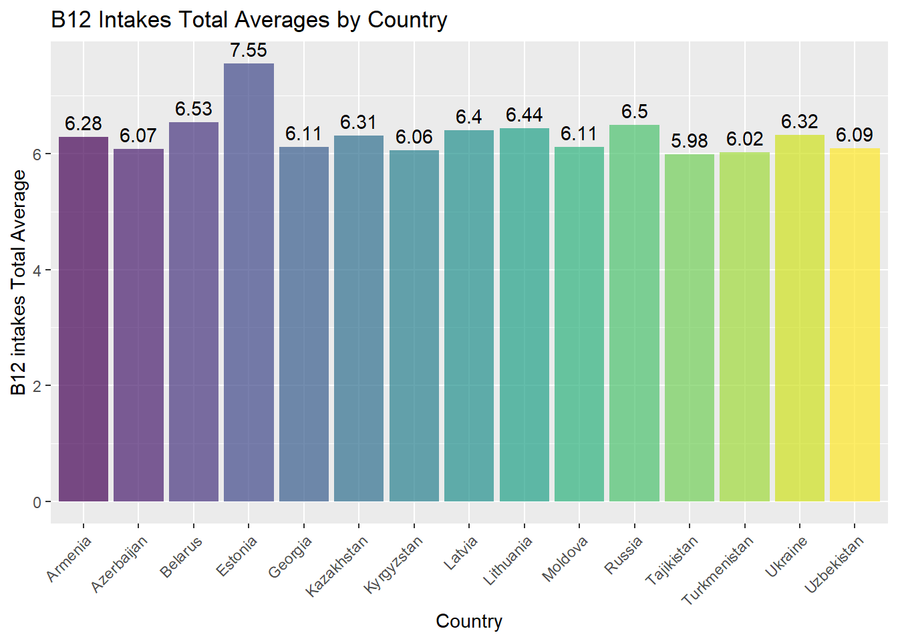
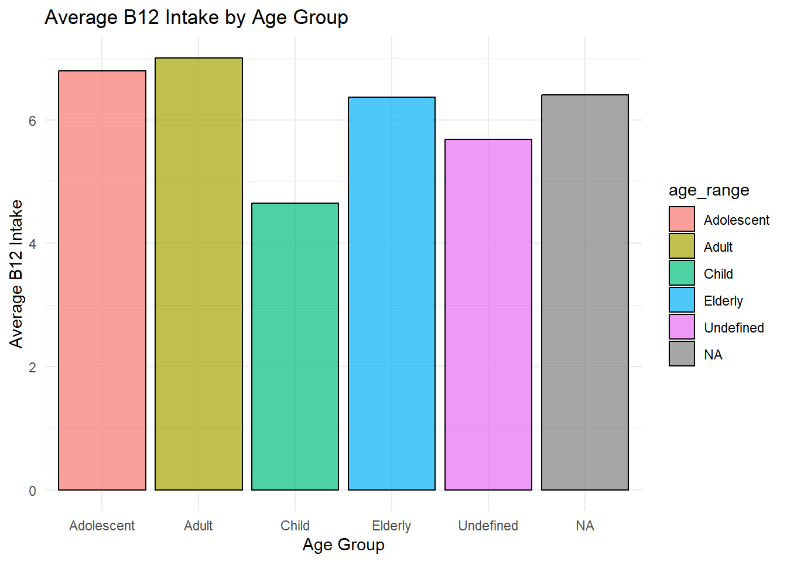

# Soviet Union data cleaned up and inserted average column by calculating the mean
soviet_union_abbreviations <- c("ARM", "AZE", "BLR", "EST", "GEO", "KAZ", "KGZ", "LVA", "LTU", "MDA", "RUS", "TJK", "TKM", "UKR", "UZB")
soviet_union_data <- data %>%
filter(country %in% soviet_union_abbreviations)
# Full country names
country_names <- c(
"Armenia", "Azerbaijan", "Belarus", "Estonia", "Georgia", "Kazakhstan", "Kyrgyzstan", "Latvia", "Lithuania", "Moldova",
"Russia", "Tajikistan", "Turkmenistan", "Ukraine", "Uzbekistan"
)
# Replace country abbreviations with full names
soviet_union_data$country <- factor(soviet_union_data$country, levels = soviet_union_abbreviations, labels = country_names)1 Assignment 1
1.1 Group Assignment For Global Dietary Database
In this analysis, we delve into the Global Dietary Database to scrutinize Vitamin B12 intake among Former Soviet Union countries. Employing the analytical prowess of ‘dplyr’ and ‘ggplot2’ in R, our aim is to uncover patterns and variations, offering a data-driven perspective on nutritional habits within this geopolitical region.
1.1.1 B12 Intakes Total Averages by Country
The following plot displays the total averages of B12 intakes for each country in the Former Soviet Union. The bars represent the mean B12 intake, providing an overview of the variations across the different countries.
# Group by Country
group_by_country_data <- soviet_union_data %>%
group_by(country) %>%
summarise(avg_b12 = mean(average, na.rm = TRUE))
# Plotting the data with geom_bar
ggplot(group_by_country_data, aes(x = country, y = avg_b12, fill = country)) +
geom_bar(stat = "identity", position = position_dodge(width = 0.8), alpha = 0.7) +
labs(title = "B12 Intakes Total Averages by Country",
x = "Country",
y = "B12 intakes Total Average") +
theme(axis.text.x = element_text(angle = 45, hjust = 1)) +
scale_fill_viridis_d() +
# Increase bar width
theme(legend.position = "none") +
geom_text(aes(label = round(avg_b12, 2)), vjust = -0.5, position = position_dodge(width = 0.8)) 
1.1.2 B12 Intakes Total Averages by Country and Gender
The following plot further breaks down the B12 intakes by gender within each country. The stacked bars show the mean B12 intake for both male and female individuals, providing insights into gender-specific patterns across the Former Soviet Union. ::: {.cell}
# Group by Country and Gender
group_by_country_gender_data <- soviet_union_data %>% filter(gender!='NA')%>%
group_by(country, gender) %>%
summarise(avg_b12 = mean(average, na.rm = TRUE), .groups = 'drop')
# Plotting the data with geom_bar (stacked)
ggplot(group_by_country_gender_data, aes(x = country, y = avg_b12, fill = factor(gender))) +
geom_bar(stat = "identity", position = "stack", alpha = 0.7) +
labs(title = "B12 Intakes Total Averages by Country and Gender",
x = "Country",
y = "B12 Intakes Total Average") +
theme(axis.text.x = element_text(angle = 45, hjust = 1)) +
scale_fill_viridis_d(name = "Gender", labels = c("Male", "Female")) +
# Increase bar width
theme(legend.position = "top") +
geom_text(aes(label = round(avg_b12, 2)), position = position_stack(vjust = 0.5))
:::
1.1.3 B12 Intakes Total Averages by Country and Year
This plot unveils the nuanced trends in mean B12 intake across years for Former Soviet Union countries. Stacked bars represent the average B12 intake, providing insights into variations over time within each country.
# Group by Year and Country
group_by_country_year_data <- soviet_union_data %>% filter(gender!='NA')%>%
group_by(year, country) %>%
summarise(avg_b12 = mean(average, na.rm = TRUE), .groups = 'drop')
# Plotting the data
ggplot(group_by_country_year_data, aes(x = year, y = avg_b12, color = country,alpha = 0.7)) +
geom_line(linewidth = 1) +
labs(title = "Average B12 intake by Year and Country",
x = "Year",
y = "Average B12 intake") 1.1.4 Dynamic Insights: Age-Stratified Trends in B12 Intake Across Former Soviet Union Nations
Exploring age group dynamics in B12 intake across Former Soviet Union nations, this plot employs stacked bars to illustrate average intake trends over time. The concise representation unveils nuanced patterns, providing insight into the evolving nutritional habits within each country and highlighting age-specific variations in B12 consumption.
raw_df <- read.csv(url)
#Change column names & column data
raw_data <- select(raw_df,country = iso3, age:upperci_95)
soviet_data <- filter(raw_data, country %in% c("ARM", "AZE", "BLR", "EST", "GEO", "KAZ", "KGZ", "LVA", "LTU", "MDA", "RUS", "TJK", "TKM", "UKR", "UZB"))
country_mapping <- c("ARM"="Armenia", "AZE"="Azerbaijan", "BLR"="Belarus", "EST"="Estonia", "GEO"="Georgia", "KAZ"="Kazakhstan", "KGZ"="Kyrgyzstan", "LVA"="Latvia", "LTU"="Lithuania", "MDA"="Moldova", "RUS"="Russia", "TJK"="Tajikistan", "TKM"="Turkmenistan", "UKR"="Ukraine", "UZB"="Uzbekistan")
soviet_data$country_full_name <- country_mapping[soviet_data$country]
soviet_data[soviet_data == 999] <- "All"
soviet_data <- soviet_data %>%
#Calculate mean
mutate(average_calculation = median + ((upperci_95 - lowerci_95) / 2))
#Analyze according to age_range
age_range <- filter(soviet_data, age %in% c(0.5, 1.5, 2.5, 7.5, 12.5, 17.5, 22.5, 27.5, 32.5, 37.5, 42.5, 47.5, 52.5, 57.5, 62.5, 67.5, 72.5, 77.5, 82.5, 87.5, 92.5, 97.5,"All" ))
age_mapping <- (c("0.5" = "Child", "1.5" = "Child", "2.5" = "Child","7.5" = "Child", "12.5" = "Adolescent", "17.5 "= "Adolescent", "22.5" = "Adult", "27.5" = "Adult", "32.5" = "Adult", "37.5" = "Adult", "42.5" = "Adult","47" = "Adult", "47.5 "= "Adult", "52.5" = "Adult", "57.5" = "Adult", "62.5" = "Elderly","67.5" = "Elderly", "72.5" = "Elderly", "77.5 "= "Elderly", "82.5" = "Elderly", "87.5" = "Elderly", "92.5" = "Elderly","97.5" = "Elderly", "All" = "Undefined"))
soviet_data$age_range <- age_mapping[soviet_data$age]
# Group by Age
group_by_age_data <- soviet_data %>%
group_by(age_range) %>%
summarize(average_calculation, na.rm = TRUE)Warning: Returning more (or less) than 1 row per `summarise()` group was deprecated in
dplyr 1.1.0.
ℹ Please use `reframe()` instead.
ℹ When switching from `summarise()` to `reframe()`, remember that `reframe()`
always returns an ungrouped data frame and adjust accordingly.`summarise()` has grouped output by 'age_range'. You can override using the
`.groups` argument.# Plotting Histogram
ggplot(group_by_age_data, aes(x = age_range, y = average_calculation, fill = age_range)) +
geom_bar(stat = "identity", position = "dodge", color = "black", alpha = 0.7) +
labs(title = "Average B12 Intake by Age Group",
x = "Age Group",
y = "Average B12 Intake") +
theme_minimal()